| はじめての統計データ分析 |
| はじめての統計データ分析 |
Gibbs sampling（GS法）：特定の母数には特定の事前分布の型を指定する必要がある。
ハミルトニアンモンテカルロ（HMC）法：分析者が自分の意思で自由な事前分布を選ぶことができる。
発生させた乱数が理想的な乱数のいくつ分に相当するか1。 標準誤差を算出する際に用いる。
チェイン間と内の散らばりを比較することで、事後分布から乱数を発生させているかを判定する指標。
|
|
|
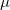 |
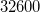 |
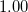 |
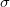 |
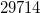 |
|
 の標準偏差。 母数 が 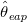 の周辺でどれほど散らばっているか。
の標準偏差。 母数 が 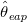 の周辺でどれほど散らばっているか。  に依存して値が決まる。
に依存して値が決まる。
の標準偏差。乱数の数 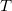 に依存して値が決まる。
| 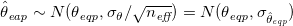 | (2.9) |
統計学とは全く関係のない知見（固有技術、ドメイン知識）
何らかの基準点を設定する場合、実質科学的知見からの要請にもとづく場合が多い。
MCMC法による標本 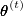 の関数 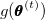 。
| 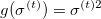 | (2.20) |
メモ
生成量としてではなく、最初から分散を母数としてはダメなのか？ （本文では、正規分布の母数にも分散ではなく標準偏差が用いられている。）
メモここまで
測定値が比尺度である場合の散布度の指標2。
| 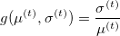 | (2.24) |
メモ
このように複数の母数が組み合わさった生成量については、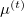 と 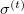 が同時分布からの標本 として得られている場合にのみ意味がある。 例えば、Gibbs sampling のように母数ごとの周辺分布からの標本しか得られない場合は、このような生成量を構成しても無意味である（と思う）。
メモここまで
| 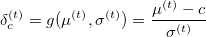 | (2.26) |
ちなみに、定数  を変化させた場合の効果量の事後分布は単純に平行移動したものにならないので注意。
を変化させた場合の効果量の事後分布は単純に平行移動したものにならないので注意。
モデル分布が正規分布のように既知である場合、予測値 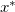 の%点の事後分布を
| 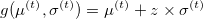 | (2.27) |
のように求めることができる3。
将来のデータが区間 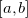 に観察される予測確率
| 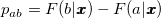 | (2.28) |
の事後分布を、生成量
| 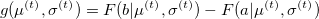 | (2.29) |
で求める。
事後予測分布：%点は推定値（1つだけ）としてしか評価できない
条件付き予測分布：%点は分布として評価できる
メモ
一般に、事後予測分布は既知の分布になるとは限らない。 一方、条件付き予測分布であれば、母数の候補値を所与とした既知のモデル分布になる。
メモここまで
| 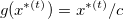 | (2.30) |
data {
int<lower=0> N;
vector<lower=0>[1] x[N];
}
parameters {
real mu;
real<lower=0> sigma;
}
model{
for(i in 1:N){
x[i] ~ normal(mu,sigma);
}
}
generated quantities{
real<lower=0> sigmasq; //分散
real x_star; //予測値
real cv; //変動係数
real delta_35; //効果量（基準値c=35）
real<lower=0,upper=1> px_under35_1; //35点未満の値が観測される事後予測確率
real rto_35; //基準点(c=35)との比
real<lower=0,upper=1> pmu_under35; //母平均が35点未満の確率
real<lower=0,upper=1> px_under35_2; //35点未満の値が観測される事後予測確率
real<lower=0,upper=1> pdelta_under1; //効果量が1.0未満である確率
real<lower=0,upper=1> px_under35_over90; //35点未満の値が観測される確率が90%以上の確率
sigmasq = pow(sigma,2);
x_star = normal_rng(mu,sigma);
cv = sigma/mu;
delta_35 = (mu-35)/sigma;
px_under35_1 = normal_cdf(35,mu,sigma);
rto_35 = x_star/35;
pmu_under35 = mu<35 ? 1:0;
px_under35_2 = x_star<35 ? 1:0;
pdelta_under1 = delta_35<1.0 ? 1:0;
px_under35_over90 = px_under35_1>0.9 ? 1:0;
}
library("rstan")
# 第2章
# 章末問題
N <- 100
x <- structure(.Data=c(
36,38,51,40,41,52,43,31,35,37,49,43,43,41,36,53,43,26,45,37,
33,38,33,35,36,28,46,41,32,49,43,38,46,46,46,45,44,40,38,37,
35,39,31,55,48,32,37,37,45,39,42,40,40,50,38,51,29,44,41,42,
43,36,38,33,32,42,43,40,46,54,37,24,47,35,35,47,38,31,41,39,
40,43,37,45,38,42,48,43,38,48,47,44,42,36,50,36,55,51,38,33),.Dim=c(100,1))
data01 <- list(N=N,x=x)
scr <- "toyoda2016-exer02.stan"
par <- c("mu","sigma","sigmasq","x_star","cv","delta_35","px_under35_1","rto_35",
"pmu_under35","px_under35_2","pdelta_under1","px_under35_over90")
war <- 5000
ite <- 105000
see <- 1234
dig <- 3
cha <- 4
fit01 <- stan(file=scr,model_name=scr,data=data01,pars=par,verbose=F,seed=see,
chains=cha,warmup=war,iter=ite)
print(fit01,pars=par,digits_summary=dig)
plot(fit01,pars=par)
traceplot(fit01,inc_warmup=T,pars=par)
mean se_mean sd 2.5% 25% 50% 75% 97.5% n_eff Rhat
mu 40.643 0.004 0.650 39.368 40.206 40.642 41.083 41.919 34081 1
sigma 6.509 0.003 0.467 5.675 6.185 6.480 6.804 7.501 31680 1
sigmasq 42.584 0.035 6.158 32.210 38.252 41.993 46.289 56.270 31548 1
x_star 40.608 0.033 6.552 27.781 36.180 40.581 45.042 53.493 40000 1
cv 0.160 0.000 0.012 0.139 0.152 0.159 0.168 0.185 32226 1
delta_35 0.871 0.001 0.117 0.644 0.793 0.871 0.950 1.101 34035 1
px_under35_1 0.193 0.000 0.032 0.136 0.171 0.192 0.214 0.260 33600 1
rto_35 1.160 0.001 0.187 0.794 1.034 1.159 1.287 1.528 40000 1
pmu_under35 0.000 0.000 0.000 0.000 0.000 0.000 0.000 0.000 40000 NaN
px_under35_2 0.195 0.002 0.396 0.000 0.000 0.000 0.000 1.000 40000 1
pdelta_under1 0.864 0.002 0.343 0.000 1.000 1.000 1.000 1.000 27626 1
px_under35_over90 0.000 0.000 0.000 0.000 0.000 0.000 0.000 0.000 40000 NaN
Footnotes
| はじめての統計データ分析 |